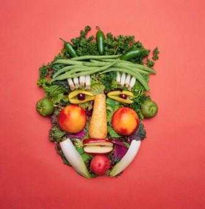

Vegetariani
|  |
| Di
questi tempi il vegetarianismo è diventato un fenomeno
culturale largamente diffuso; ormai in parecchi ristoranti si può
trovare un’intera pagina dedicata a piatti vegetariani.
Sembra
però che il vegetarianismo non sia solo una moda di questi tempi, ma
che tragga origine da una predisposizione non solo fisiologica, ma anche
istintiva. Nico Valerio ( autore di un volume sull’alimentazione
naturale) afferma: “ E’ un dato di fatto che sia i carnivori che gli
onnivori quando sono affamati, sono attratti irresistibilmente dalla
vista di un animale vivente o di un cadavere. Questo non accade mai
all’uomo, neanche negli enfant sauvage, bambini cresciuti allo stato
selvaggio grazie al solo istinto naturale. Il bambino semmai ruba la
marmellata o il frutto dell’albero, se è goloso, ma non ruba mai un
piatto di carne, ne tanto meno uccide un piccolo animale per soddisfare
la propria fame, come fanno invece i piccoli carnivori e onnivori” Il
vegetarianismo elimina dalla dieta qualsiasi parte animale, compresi
pesci, crostacei e lardo, ma in alcuni casi accetta i prodotti di
origine animale: latte, formaggi, miele e uova, alimenti che non
necessitano l’uccisione dell’animale.
|